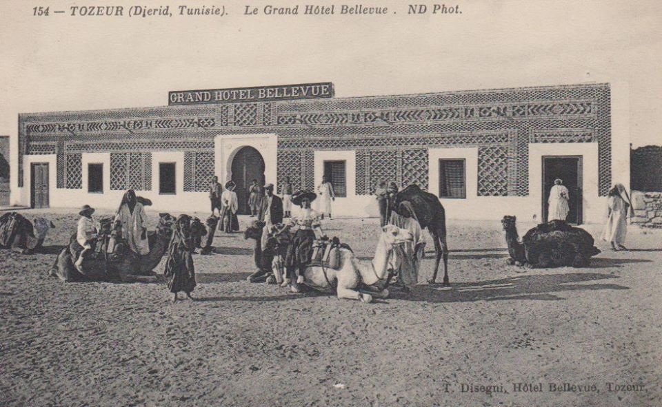
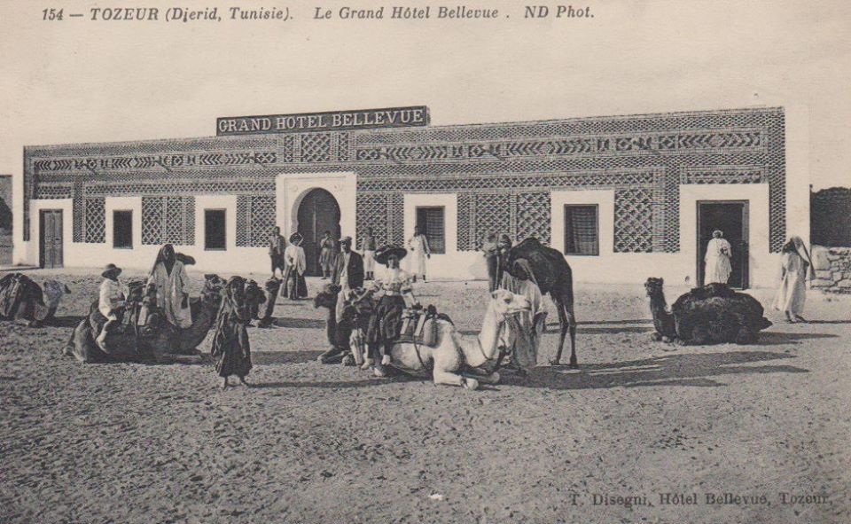
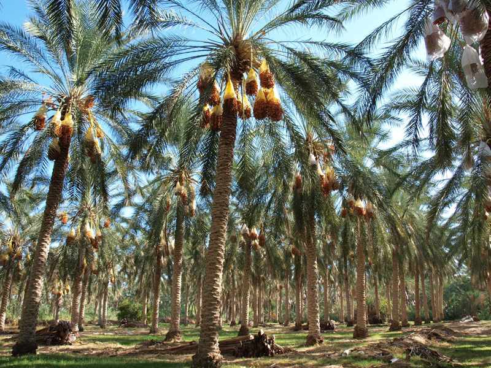
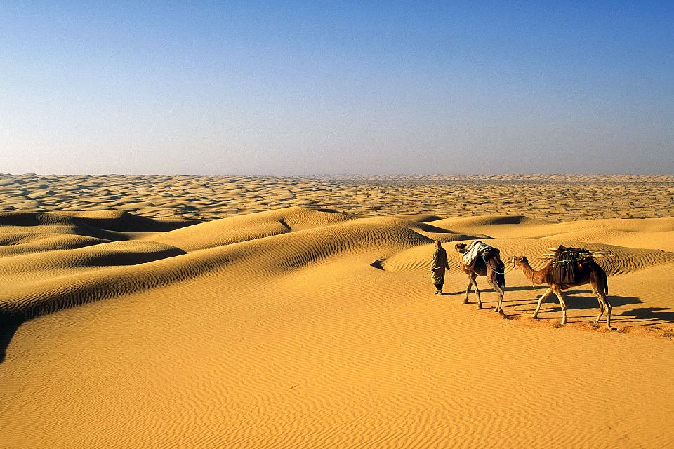
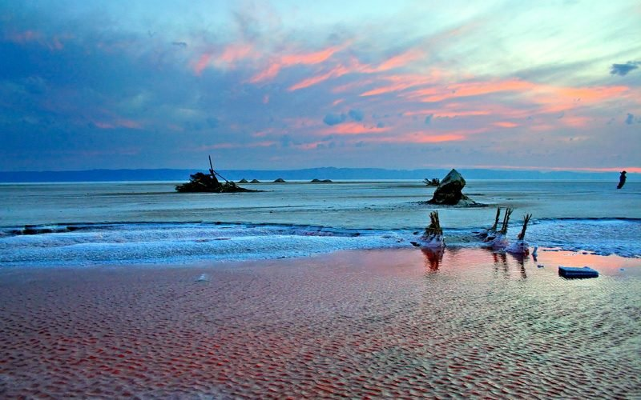
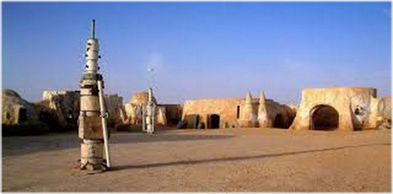

Our VIP Sahare is not like the other desert in all the world...!
Tozeur in southern Tunisia wears its storied history fairly lightly.Her architectural style is unique, playing with bricks of sand clay and impressive oasis.
I guarantee you’ll be impressed and mesmerized by its splendid beauty.
History
Tozeur was historically an important stopping point for caravans crossing the Sahara, a place to rest and refuel before heading deeper into the dessert. It was also used as an important Roman outpost and has since been ruled by a variety of tribes including the Berbers for much of its history, who have perhaps the most influence on the city’s historic architecture.

 

See
Would-be adventurers will find plenty of tourist attractions and things to do:
Medina
Please watch this video to discover the amazing architecture of tozeur !
Medina is special and unique, different from the others in Tunisia; it reflects the architecture of the region. The buildings are made of small ocher-colored bricks, assembled to create amazing geometric patterns. The designs usually represent flowers or Quranic verses.
The palm groove
A great place to visit in Tozeur is its palm grove, one of the biggest in the country and also one of the most beautiful. Around 350 000 palm trees, spread on 2 000 ha, creating a true jungle, consisting of three layers of vegetation: culture fields, fruit trees, and the palm trees.
Sahara
Sahara offers particularly photogenic landscapes. The erg, or sand dunes, is shaped into hills, valleys, ridges and ridges in the wind.
Chott el-Jerid
Chott el Jerid is a salt plain, aka a mirage. I always had thought that mirages were hallucinations, it’s not, it’s more of an optical illusion. Salt plains are frequent in the Sahara, and the reflection of the sun on the salt makes it looks like there’s water. This Chott is a top-place to visit while in TozeurThis site was used for multiple Star Wars movies. Scenes in the town 'Mos Espa' or 'Mos Eisley' have been filmed here. Tours are available from local guides. Prices should be about the same for any half-day tour from TozeurMedina is special and unique, different from the others in Tunisia; it reflects the architecture of the region. The buildings are made of small ocher-colored bricks, assembled to create amazing geometric patterns. The designs usually represent flowers or Quranic verses.
Star Wars site
This site was used for multiple Star Wars movies. Scenes in the town 'Mos Espa' or 'Mos Eisley' have been filmed here. Tours are available from local guides. Prices should be about the same for any half-day tour from TozeurMedina is special and unique, different from the others in Tunisia; it reflects the architecture of the region. The buildings are made of small ocher-colored bricks, assembled to create amazing geometric patterns. The designs usually represent flowers or Quranic verses.
Famous
-
Abu-Qacem Echebbi (Arabic: أبو القاسم الشابي) (b. Tozeur, February, 1909; d. October 9, 1934), is a Tunisian poet. The current Tunisian anthem is based on one of his poems.

-
Ibn Chabbat (Arabic:ابن شباط) AKA Mohamed Ben Ali Ben Mohamed Ben Ali, (October 16, 1221 – June 17, 1285 in Tozeur) , is a writer, historian, engineer and a respected Tunisian social figure in the 13th century. Ibn Chabbat's main contribution and legacy is an open surface canals system for equitable water distribution in the oasis that is still in use nowadays.

My contact details
| Adress: | Tunis, Tunisia |
| Mobile: | +216 25960075 |
| Email: | alatrechsafa@gmail.com |